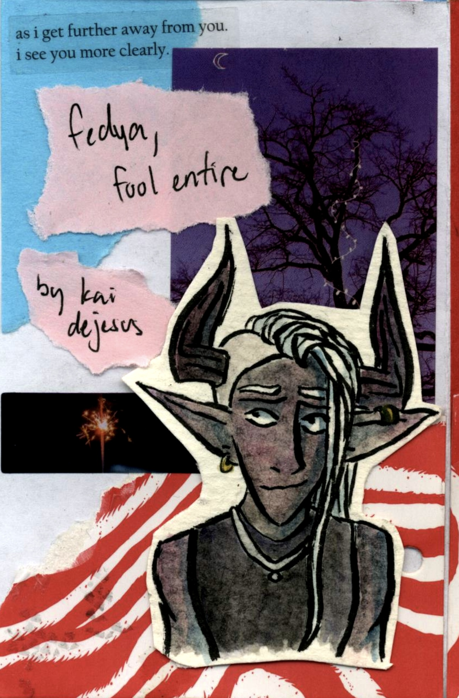

Zines
See a zine you like or want to trade? Shoot me an email or check out my Ko-Fi down below.
The True Crime Podcast Sends Its Regards (2023) is a 5.75"x8" zine studying the ethics and narrative choices made in popular true crime podcasts Criminal, My Favorite Murder, and Crime Junkie. Created in Adobe InDesign, the zine discusses each show's fans, controversies, format, tone, and ad breaks. TTCPSIR was created as part of Kai DeJesus' senior project at Seton Hall University. It received an A.
Just Like Me FR FR (2023) is a handmade 2.87"x4" zine inspired by the Resident Evil franchise. Created on Procreate shortly after the release of the Resident Evil 4 Remake, the zine discusses trauma and the catharsis of relating to the game's protagonist, Leon S. Kennedy. JLMFF features original digital and traditional art.
Do Not Play Dungeons and Dragons (2022) is a handmade zine. The 2.87"x4" mini magazine details alternative tabletop games to play that are not Dungeon and Dragons through collage and found materials from tabletop games.
You Will Destroy Me When You Die (2022) is a handwritten zine featuring original art and poetry. Based on a true story, the 2.87"x4" zine follows a nameless narrator as they watch their roommate get quickly engaged to a man overseas who they've never met in person. This relationship is further complicated by the roommate's cat, who their fiance is deathly allergic to.
Dog or Wolf (2022) is a handmade zine featuring collage and original watercolor paintings. Throughout the 2.87"x4" mini magazine, the readers follow the thoughts of a crime reporter and the very serial killer he's trying to catch-- who just so happens to be a buddy from high school. This zine is a companion to I Am a Wolf Among These Sheep.
Notes From Therapy Volume One (2022) is a handmade 2.87"x4" mini zine featuring collage and ruminating on what it means to be loved. Based on Kai DeJesus's thoughts from their first therapy sessions, they explore love in all forms and their trouble in experiencing it.
No That's Wrong (2022) is a collage-style 2.87"x4" zine featuring art from the video game series Danganronpa. The story likens trauma to the events of the games, starting with a percieved victory and ending on an introspective note of what happens next.
Inspired by the works of H.P. Lovecraft, Horrifying and Terrifying (2022) is a 2.87"x4" zine that grapples with the fear of being unlovable. Created in Procreate, this zine features original art.
I Am a Wolf Among These Sheep (2022) is a companion to Dog Or Wolf, detailing more about the characters. Created in Procreate, this 2.87"x4" zine features original digital art.
Fedya, Fool Entire (2023) is a handmade 2.87"x4" zine that uses watercolor and collage to tell the story of a queer half-elf adventurer ruminating on belonging, identity, and family.
This Has Happened Before (2022) is a collage-style 2.87"x4" zine focusing on The Park Avenue Armory's 2022 production of The Oresteia directed by Robert Icke. Using promotional material from the production, the zine discusses the show's themes of family, religion, and feminism.
The End is Near (2022) is a handmade 2.87"x8" zine that explores the end of friendships through original ink illustration collage, and music. Throughout the story, the narrator discusses the complicated friends they've surrounded themself with shortly before they lost contact.
coded by hope de jesus 2023
follow along
im always looking for new opportunities. please reach out!